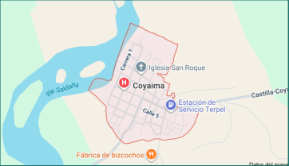

Coyaima - Tolima
El 65% de los habitantes son jóvenes menores de 30 años y más del 50% de los hogares no cuentan con acceso regular al agua potable. El agua que consumen proviene de fuentes naturales como quebradas, que en temporadas secas disminuyen considerablemente.
